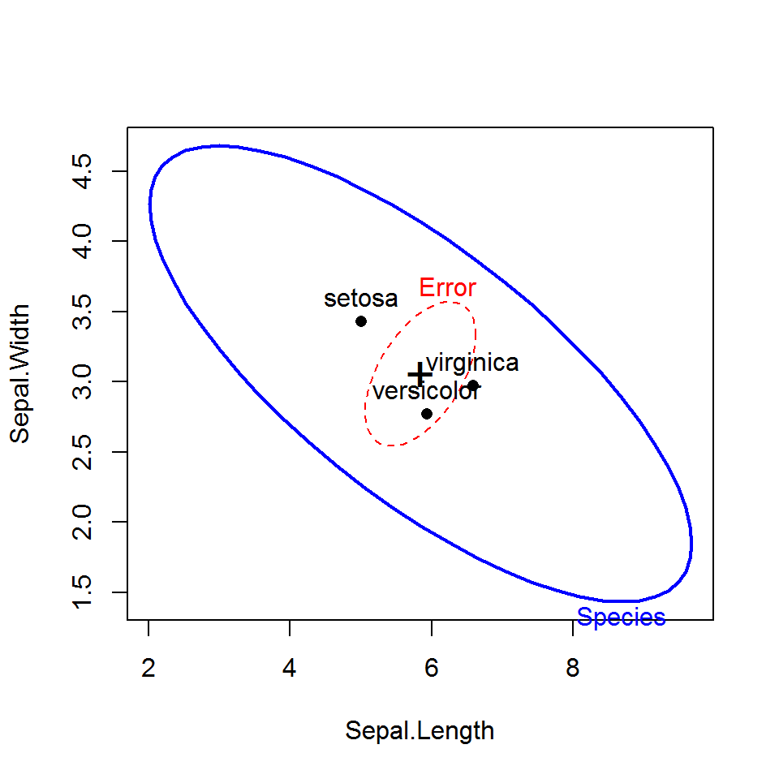
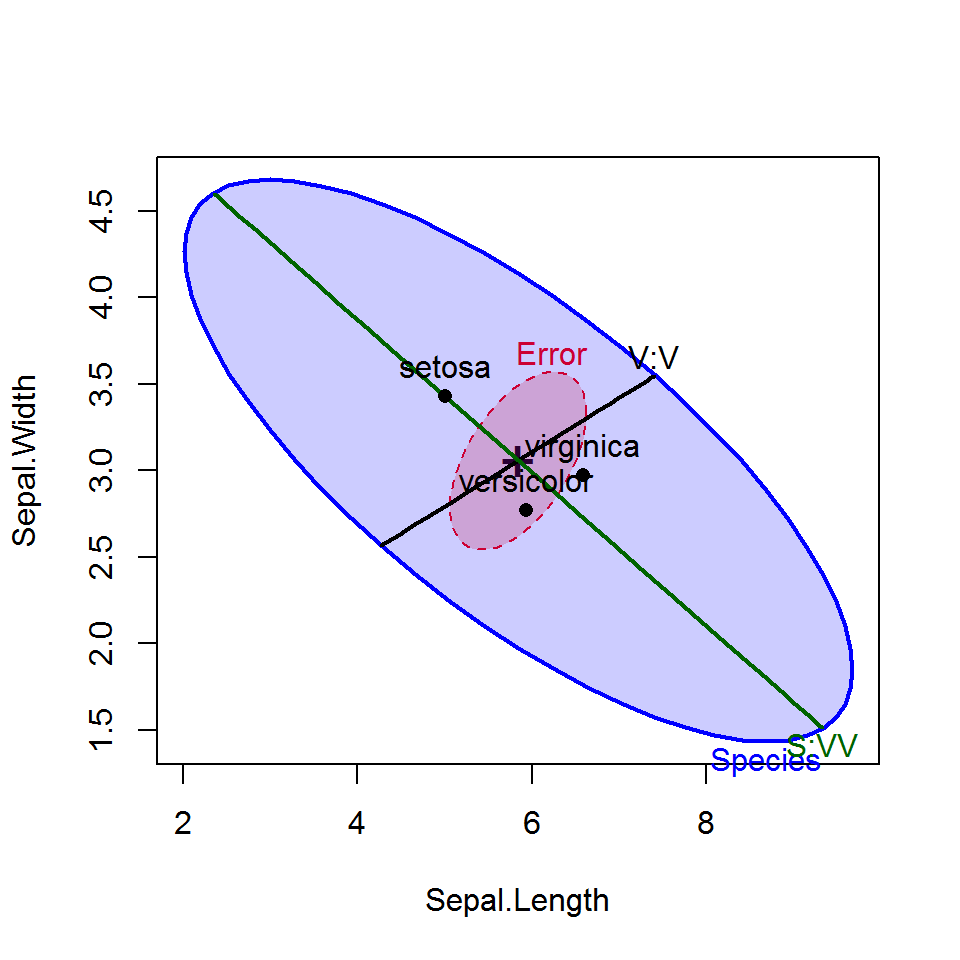
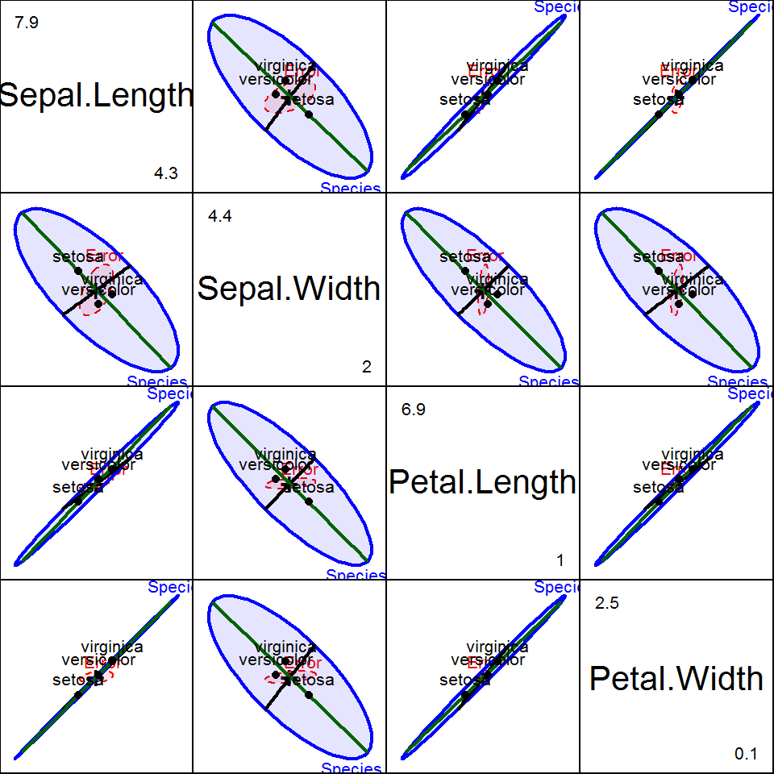

Description
The heplots package provides functions for visualizing hypothesis tests in multivariate linear models (MANOVA, multivariate multiple regression, MANCOVA, and repeated measures designs).
HE plots represent sums-of-squares-and-products matrices for linear hypotheses (H) and for error (E) using ellipses (in two dimensions), ellipsoids (in three dimensions), or by line segments in one dimension. See Fox, Friendly and Monette (2009) for a brief introduction, Friendly, Monette and Fox (2013) for a general discussion of the role of elliptical geometry in statistical understanding, and Friendly & Sigal (2017) for an applied R tutorial.
Other topics now addressed here include:
- robust MLMs,
- visualizing tests for equality of covariance matrices in MLMs (Box’s M test),
- chi sqare Q-Q plots for MLMs.
The package also provides a collection of data sets illustrating a variety of multivariate linear models of the types listed above, together with graphical displays.
Several tutorial vignettes are also included. See vignette(package="heplots").
Installation
Get the released version from CRAN:
install.packages("heplots")The development version of heplots can be installed to your R library directly from github via:
if (!require(devtools)) install.packages("devtools")
library(devtools)
install_github("friendly/heplots", build_vignettes = TRUE)This installs the package from the source and creates the package vignettes, so you will need to have R Tools installed on your system. R Tools for Windows takes you to the download page for Windows. R Tools for Mac OS X has the required programs for Mac OS X.
HE plot functions
The graphical functions contained here all display multivariate model effects in variable (data) space, for one or more response variables (or contrasts among response variables in repeated measures designs).
The related candisc package plots these in canonical discriminant space, the space of linear combinations of the responses that show the maximum possible effects.
heplotconstructs two-dimensional HE plots for model terms and linear hypotheses for pairs of response variables in multivariate linear models.heplot3dconstructs analogous 3D plots for triples of response variables.The
pairsmethod,pairs.mlmconstructs a scatterplot matrix of pairwise HE plots.heplot1dconstructs 1-dimensional analogs of HE plots for model terms and linear hypotheses for single response variables.
Repeated measure designs
For repeated measure designs, between-subject effects and within-subject effects must be plotted separately, because the error terms (E matrices) differ. For terms involving within-subject effects, these functions carry out a linear transformation of the matrix Y of responses to a matrix Y M, where M is the model matrix for a term in the intra-subject design and produce plots of the H and E matrices in this transformed space. The vignette "repeated" describes these graphical methods for repeated measures designs.
Examples
This example illustrates HE plots using the classic iris data set. How do the means of the flower variables differ by Species? A basic HE plot shows the H and E ellipses for the first two response variables (here: Sepal.Length and Sepal.Width). The multivariate test is significant (by Roy’s test) iff the H ellipse projects anywhere outside the E ellipse.
The positions of the group means show how they differ on the two response variables shown, and provide an interpretation of the orientation of the H ellipse: it is long in the directions of differences among the means.
iris.mod <- lm(cbind(Sepal.Length, Sepal.Width, Petal.Length, Petal.Width) ~
Species, data=iris)
heplot(iris.mod)
Contrasts or other linear hypotheses can be shown as well, and the ellipses look bettter if they are filled. We create contrasts to test the differences between versacolor and virginca and also between setosa and the average of the other two.
contrasts(iris$Species)<-matrix(c(0, -1, 1,
2, -1, -1), nrow=3, ncol=2)
contrasts(iris$Species)
#> [,1] [,2]
#> setosa 0 2
#> versicolor -1 -1
#> virginica 1 -1
iris.mod <- lm(cbind(Sepal.Length, Sepal.Width, Petal.Length, Petal.Width) ~
Species, data=iris)
hyp <- list("V:V"="Species1","S:VV"="Species2")
heplot(iris.mod, hypotheses=hyp,
fill=TRUE, fill.alpha=0.2)
All pairwise HE plots are produced using the pairs method for MLM objects.
pairs(iris.mod, hypotheses=hyp, hyp.labels=FALSE,
fill=TRUE, fill.alpha=0.1)
References
Fox, J.; Friendly, M. & Monette, G. (2009). Visualizing hypothesis tests in multivariate linear models: The heplots package for R Computational Statistics, 24, 233-246. paper PDF
Friendly, M.; Monette, G. & Fox, J. (2013). Elliptical Insights: Understanding Statistical Methods Through Elliptical Geometry Statistical Science, 28, 1-39. paper PDF
Friendly, M. & Sigal, M. (2017) Graphical Methods for Multivariate Linear Models in Psychological Research: An R Tutorial. The Quantitative Methods for Psychology, 13, 20-45. article